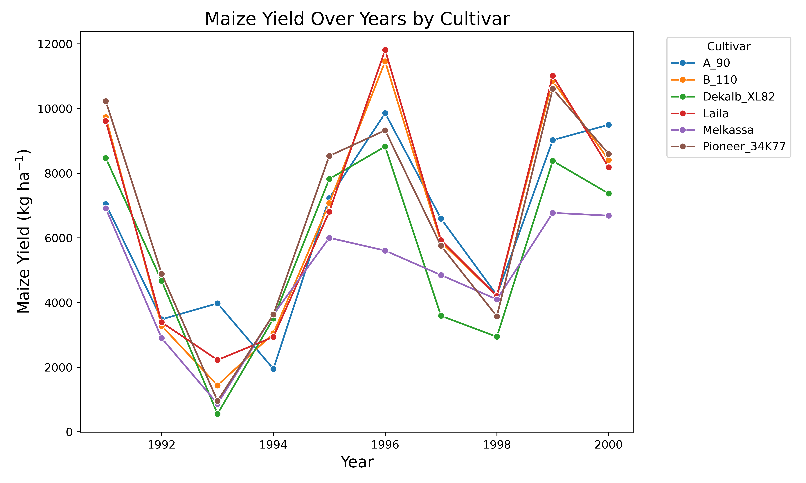

Comparing cultivars yield
In this tutorial we are going to compare the cultivar yield across different cultivars using apsimNGpy
Firstly, we are going to start by creating a none permutation experiment
from apsimNGpy.core.apsim import ApsimModel
model = ApsimModel('Maize')
model.create_experiment(permutation=False)
model.add_factor(specification="[Sow using a variable rule].Script.CultivarName = Dekalb_XL82, Melkassa, Pioneer_34K77, Laila, B_110, A_90")
model.run()
df = model.results
Note
Cultivars Dekalb_XL82, Melkassa, Pioneer_34K77, Laila, B_110, A_90 were selected randomly for demonstration purposes only. We also assumes that they are planted in the same field, therefore, same weather and soil factors.
To see all the available cultivars and select from a list use:
model.inspect_model('Cultivar', fullpath=False)
getting info about the simulated output
import pandas as pd
pd.set_option('display.max_columns', None)
df.info()
# output
<class 'pandas.core.frame.DataFrame'>
RangeIndex: 60 entries, 0 to 59
Data columns (total 18 columns):
# Column Non-Null Count Dtype
--- ------ -------------- -----
0 SimulationName 60 non-null object
1 SimulationID 60 non-null int64
2 CheckpointID 60 non-null int64
3 CheckpointName 60 non-null object
4 Clock.Today 60 non-null object
5 CultivarName 60 non-null object
6 Experiment 60 non-null object
7 Maize.AboveGround.N 60 non-null float64
8 Maize.AboveGround.Wt 60 non-null float64
9 Maize.Grain.N 60 non-null float64
10 Maize.Grain.NumberFunction 60 non-null float64
11 Maize.Grain.Size 60 non-null float64
12 Maize.Grain.Total.Wt 60 non-null float64
13 Maize.Grain.Wt 60 non-null float64
14 Maize.Phenology.CurrentStageName 60 non-null object
15 Maize.Total.Wt 60 non-null float64
16 Yield 60 non-null float64
17 Zone 60 non-null object
dtypes: float64(9), int64(2), object(7)
memory usage: 8.6+ KB
# most of the columns in the dataset are float
other alternative:
df.describe()
Since our major factor is CultivarName, we will next examine the corresponding mean yield for each cultivar
mean_yields = df.groupby('CultivarName')['Yield'].mean().sort_values(ascending=False)
print(mean_yields)
# output
CultivarName
Laila 6610.2287
Pioneer_34K77 6608.3364
B_110 6535.0578
A_90 6286.9042
Dekalb_XL82 5611.6749
Melkassa 4831.0817
Name: Yield, dtype: float64
Clearly Melkassa has the lowest yield, and laila performed better than all other cultivars. Let’s take a step further and visualize their mean, median, minimum or maximum values using a boxplot
from matplotlib import pyplot as plt
model.boxplot('Yield', by = 'CultivarName', figsize=(10,8), rotate_xticks=False, show=True)
plt.show()
Obviously, there is no doubt Melikassa performs poorly in this area in terms of maize yield quarterly percentiles and median are very different fom the rest of the cultivars.
Meanwhile Laila and ``B_110` are similar, but different from that of Dekalb_XL82
model.series_plot(x= 'Year', y= 'Yield', hue='Cultivar')
plt.show()
Variability across the simulation years
All cultivar had the same annual yield trend but there is a year when a_90 had more maize yield than all the others
See also